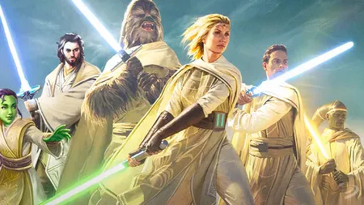
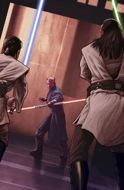
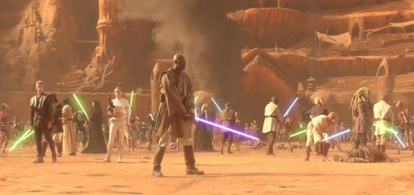
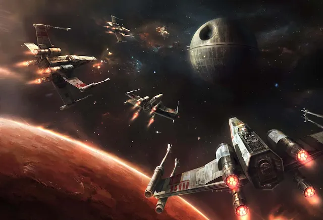
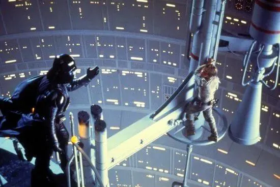
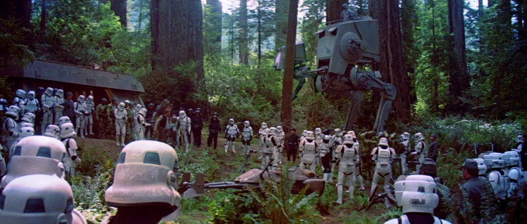
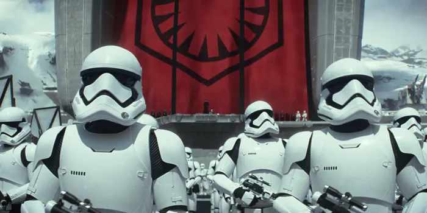
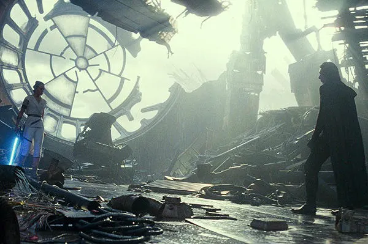

Fundação da República e dos Jedi

O estabelecimento da República Galáctica e a união dos Cavaleiros Jedi como protetores da paz inauguram mil gerações de estabilidade e harmonia democrática na galáxia.
Localização: Coruscant - Capital da República
Personagens Importantes: Mestres Jedi Antigos
A Crise de Naboo

O bloqueio da Federação do Comércio desencadeia eventos que revelam o garoto Anakin Skywalker, o ressurgimento misterioso dos Sith e os primeiros passos de Palpatine rumo ao poder supremo.
Planeta: Naboo
Personagens Chave: Qui-Gon Jinn, Obi-Wan Kenobi, Yoda
Início das Guerras Clônicas

A Batalha de Geonosis marca a mobilização do misterioso Exército de Clones da República contra os Separatistas, dando início a um conflito planejado secretamente para enfraquecer os Jedi.
Localização: Geonosis - Arena Desértica
Adversários: Conde Dooku, Jango Fett
A Queda da República
A execução da Ordem 66 destrói a Ordem Jedi. Anakin Skywalker sucumbe ao Lado Sombrio, tornando-se Darth Vader, enquanto Palpatine extingue a República e proclama o primeiro Império Galáctico.
Localização: Templo Jedi, Coruscant
Transformação: Anakin → Darth Vader
A Batalha de Yavin

Após rebeldes roubarem os planos da Estrela da Morte, o jovem fazendeiro Luke Skywalker lidera o ataque para destruir a estação bélica do Império, marcando a primeira grande vitória da Aliança Rebelde.
Localização: Yavin 4
Herói: Luke Skywalker (com ajuda da Força)
O Confronto em Bespin

Após a destruição da base em Hoth, Luke Skywalker treina com o mestre Yoda, mas é atraído por Darth Vader para uma armadilha em Cloud City, descobrindo a terrível verdade sobre seu parentesco.
Localização: Cloud City (Bespin)
Revelação: "Eu sou seu pai" - uma das cenas mais icônicas do cinema
A Queda do Império

Durante a Batalha de Endor, Luke enfrenta Darth Vader e o Imperador. Vader redime-se voltando-se contra Palpatine para salvar o filho. A segunda Estrela da Morte é destruída, e a liberdade retorna à galáxia.
Localização: Endor e Morte Negra II
Momento Épico: Anakin Skywalker redime-se como Jedi
A Ascensão da Primeira Ordem

Uma nova ameaça surge das cinzas do Império. Com a ajuda da Resistência, a catadora de lixo sensível à Força, Rey, e o desertor Finn combatem o temível Kylo Ren e destroem a base Starkiller.
Localização: Tatooine, Takodana, Starkiller Base
Novos Heróis: Rey, Finn, Poe Dameron
A Batalha de Exegol

O Imperador Palpatine retorna dos mortos no planeta oculto dos Sith. Rey e Ben Solo se unem para derrotá-lo em definitivo, restabelecendo a paz e honrando o legado dos Skywalker.
Localização: Exegol - Planeta Sith Secreto
Desfecho: Redenção de Ben Solo, vitória de Rey